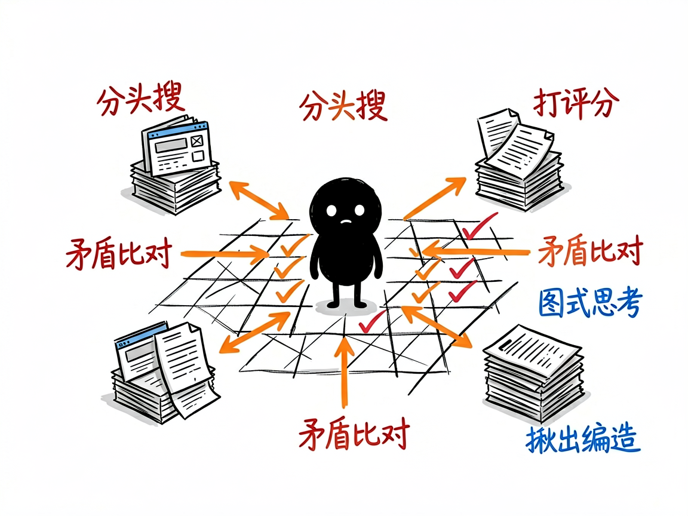

丢个主题进去，自动给你吐出一份带引用的完整研究报告 —— deep-research-agent 介绍
你有没有过这种经历：老板甩来一句"研究一下 AI 在医疗行业的现状"，你打开浏览器，搜了三个小时，收藏夹里塞满标签页，最后拼拼凑凑写出来的东西自己都心里没底——到底哪个数据是真的、哪个来源靠谱，全混在一起。
deep-research-agent 就是来解决这件事的。 你给它一个研究主题，它还你一份结构化的、带完整引用的深度研究报告。它不像普通聊天机器人那样凭印象答你几句，而是真去网上搜、多方比对、再把结论整理成可以交差的文档。

它到底能做什么
- 先问清楚你要什么：它会主动确认研究范围、想要什么格式、关注哪段时间、对来源有什么要求，而不是一上来就瞎搜。
- 同时派出多个"研究员"（可以理解为被派出去分头查资料的 AI 助手）并行搜索，比一个人慢慢翻快得多。
- 对复杂话题会用"图式思考"（一种让 AI 像下棋一样规划研究路径、给每条线索打分的策略）来安排先查什么、深挖什么。
- 把所有来源的发现整合成一篇报告，遇到不同来源说法矛盾时，会去分析谁更可信、把共识和分歧都摆出来。
- 每个数据都标出来源，并按权威度做 A 到 E 的评级（A 是年报、政府文件这类一手资料，E 是论坛传闻这类不可靠内容），还会检测有没有编造数据。
- 最后生成一个完整文件夹：执行摘要、全文报告、关键数据、参考文献清单、来源质量表、引用验证报告，拿来就能用。

怎么用
你不需要记任何命令。在 codex / workbuddy 等 agent 装好 deep-research-agent 技能后，直接对 AI 说话就行：
场景 1：老板甩来一个宽泛的研究题 你：帮我深度研究一下 2025 年 AI Agent 的产业趋势 AI：它先跟你确认研究范围、想要什么格式、关注哪段时间，然后派出多个研究员分头上网搜、交叉比对，最后给你一份带完整引用的深度报告，放进一个研究报告文件夹里。
场景 2：你想精确一点、不想被追问 你：研究一下量子计算的产业现状，输出中文报告，30 页左右，重点关注 IBM 和 Google 的技术路线 AI：它跳过提问环节直接开干，按你给的要求搜资料、整理成报告，每个数据都标了来源和权威度评级。
场景 3：研究完了想复查出处 你：帮我看看这份报告里的引用靠不靠谱 AI：它逐条核验来源，揪出可能编造的数据，并告诉你哪些来源更可信。
谁适合用
- 需要做行业调研、竞品分析、政策研究的职场人。
- 写论文或综述、需要多来源扎实引用的学生和研究员。
- 做商业分析、想快速拿到一份带出处报告的产品或战略团队。
一点说明
它是装在 codex / workbuddy 这类 AI 助手里的技能，不是单独打开的 App——你得先有一个能加载技能的 AI 环境，它才会自动工作。研究越具体，效果越好：与其说"研究 AI"，不如说"研究 2025 年 AI 在医疗影像诊断里的应用现状和市场前景"。复杂主题一般要跑 5 到 20 分钟，中途也可以打断、调整方向。具体能力以项目文档为准。